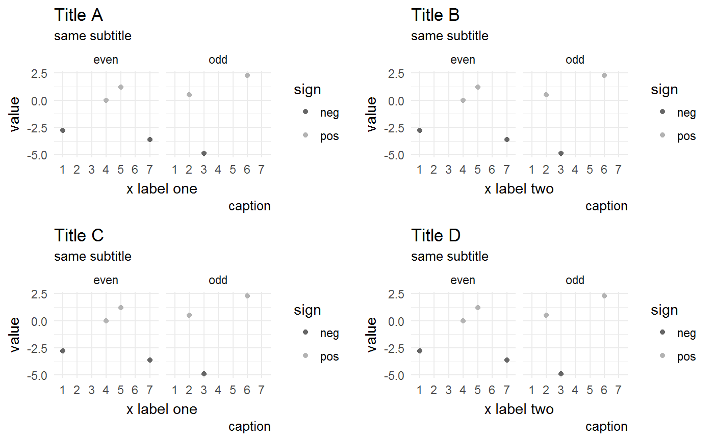
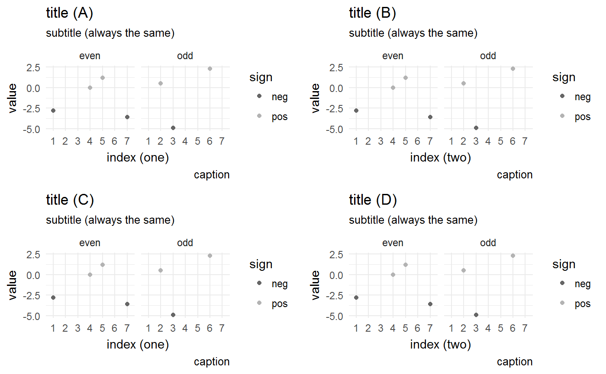
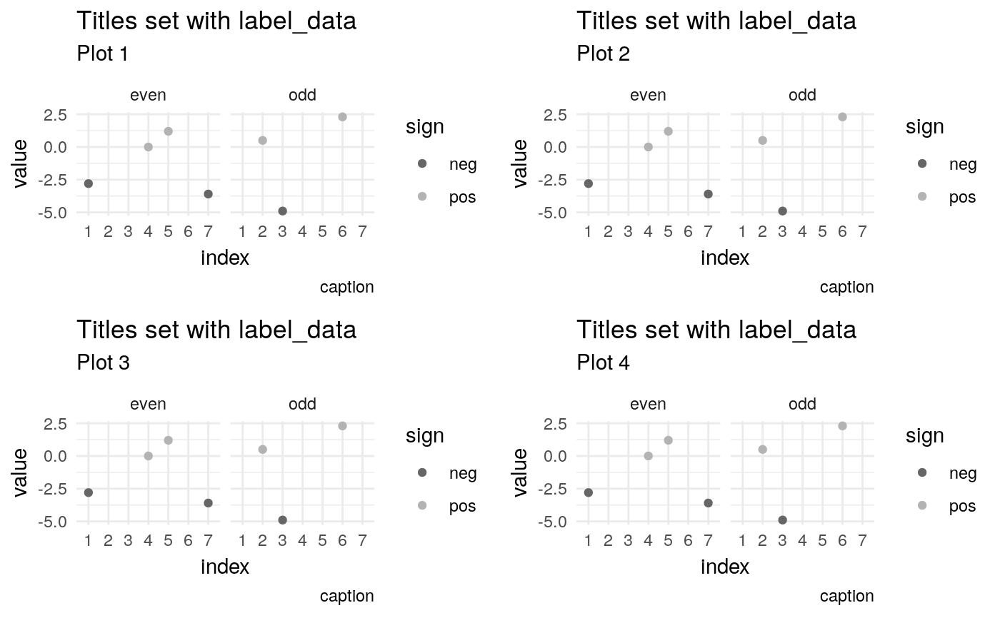

Set the Labels in a List of ggplot Objects
set_labels(plots, ..., indices = seq_along(plots), label_data = NULL, action = c("replace", "append", "prepend")[1], sep = " ")
| plots | list of ggplot objects as returned by |
|---|---|
| … | name-value pairs as given to |
| indices | indices of the plots to which the label is to be given. By default the label is given to all plots |
| label_data | data frame containing the different label types in
different columns. If given and not |
| action | one of |
| sep | separator to be used when |
p <- example_plot_2() plots <- list(p, p, p, p) plots_1 <- set_labels( plots, title = c("Title A", "Title B", "Title C", "Title D"), subtitle = "same subtitle", x = c("x label one", "x label two") ) plots_2 <- set_labels( plots, title = c("(A)", "(B)", "(C)", "(D)"), subtitle = "(always the same)", x = c("(one)", "(two)"), action = "append" ) label_data <- data.frame(title = "Titles set with label_data", subtitle = sprintf("Plot %d", seq_along(plots)) ) plots_3 <- set_labels(plots, label_data = label_data) do.call(gridExtra::grid.arrange, plots_1)